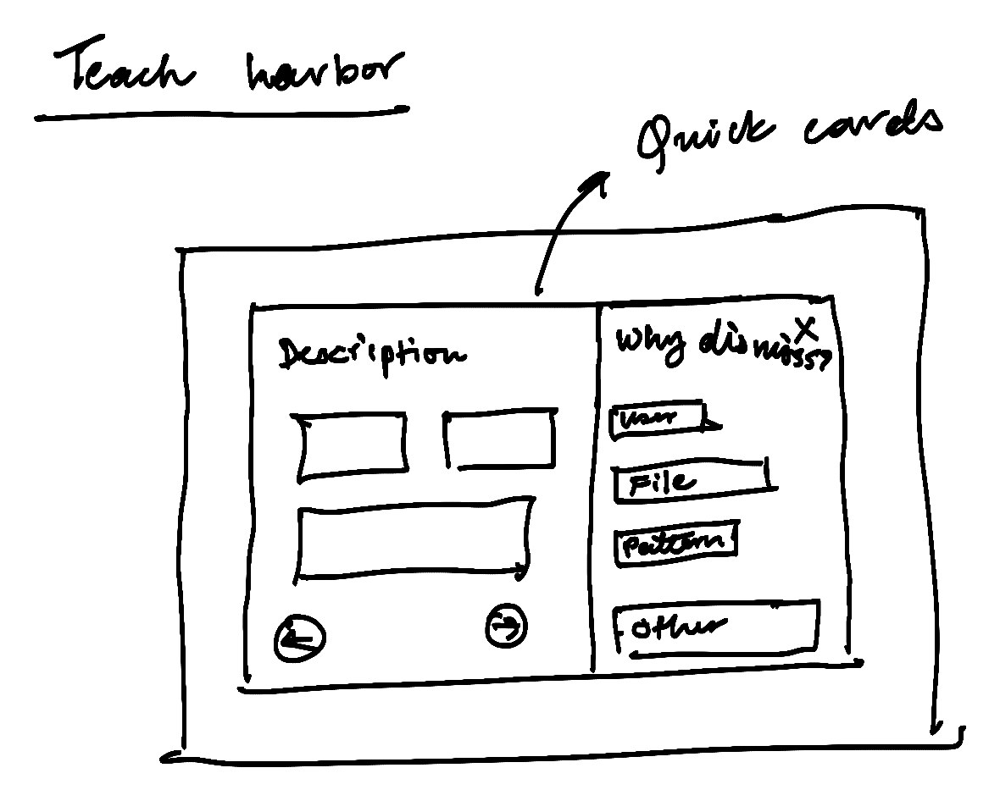
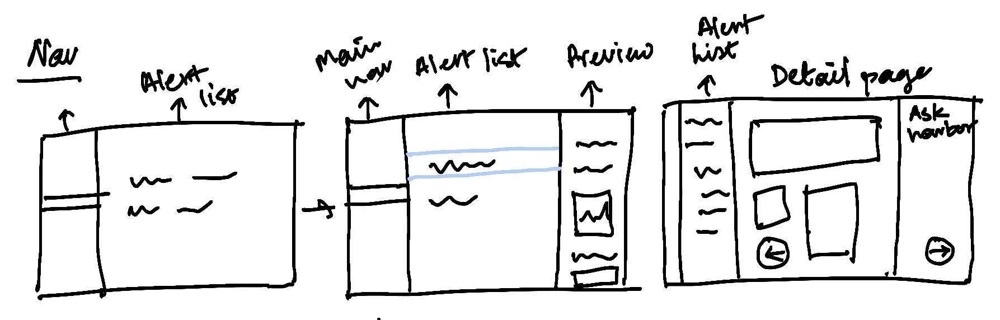
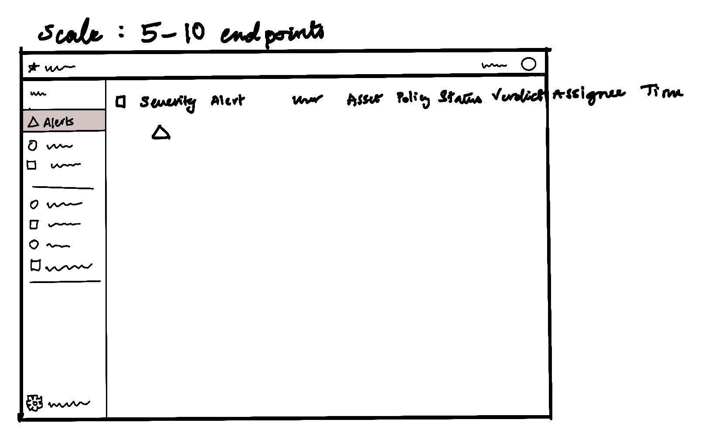
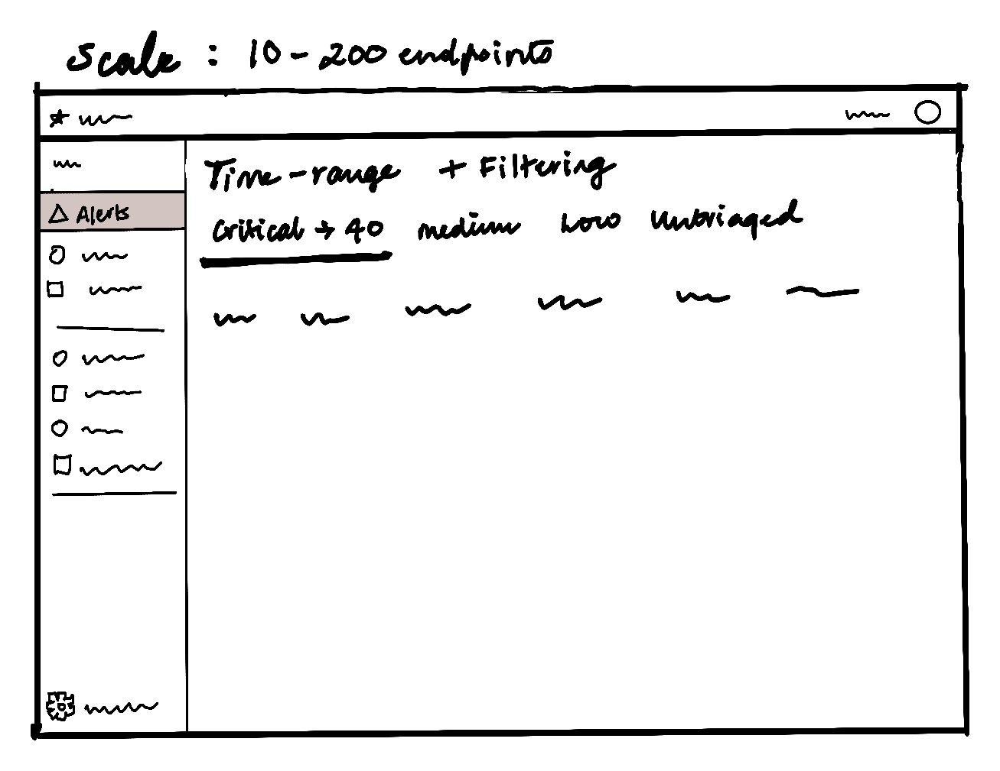
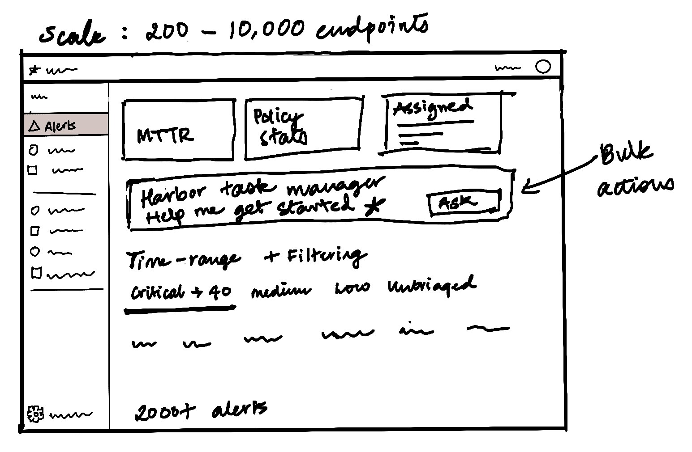

Each direction answers one finding from the research. Where the competitors made opposite choices, I drew both and picked.
Sketches

Teach Harbor: quick cardsCards you flip through quickly. Each card describes the alert on the left. On the right are the reasons for dismissing it.

Main nav, alert list, preview panel, detail pageStart with the main navigation on the left and the alerts list. Clicking an alert opens a preview panel on the right: a description of everything that happened, what the AI is confident about, and what it did or is waiting on you to do. The detail page holds all the metadata (serials, numbers, IPs) and the Ask Harbor chat, where you can dig deeper and drive down into the details.
Chosen versus tradeoffs
AI as summary or procedure
Narrative with linked entitieschosen
Step list approved line by linetried
1 status field or 2
Status plus a separate verdictSplunk, Matters.AI
Status as the action takenNightfall
Filters or a threshold
Filters and Harbor action, no scoreFalcon, Netskope
One severity sliderDarktrace
Side panel or full page
Detail beside the queueFalcon, Purview
Full page with sibling tabsVaronis, Defender
Alert or incident as the unit
Alerts, grouped into incidents when relatedchosen
Incident as the only unitDefender
Summary widgets or a dense list
Four counts, then the list. The rest of the overview collapsesPurview
A full KPI dashboard above the queueNetskope, SentinelOne
The exploration canvas that puts every feature on one page and draws each clash as a variant: open the mockups. It is part of the ideation, not the final prototype.
Ideas that made it
There is a side panel preview for quick scoping. If more investigation is required, then the user can go into the full details page, but all quick actions can be taken from the side panel.
Drawing distinctions between actions, statuses, and verdicts
Using natural language filters and harbor actions rather than a score or threshold
Alert, as the main unit incident grouping is provided as an option
Providing statistics relevant to alert triage above the queue and showing a manager's overview, including MTTR policies overview and assignees overview within a collapsed overview
The decision is made without leaving the alerts page. Only the deep evidence trail goes elsewhere.
Designing for irreversible actions. Human intervention is required to confirm a step where an action is irreversible. For example, closing an alert, muting it or changing its severity can be undone. Disabling accounts or deleting a file cannot, so only those get a confirmation step.
Trade-off
A side panel cannot show the full event timeline and graph at once; that lives one step away.
2 fields take 1 more click to close than 1 field would.
Filters ask more of a junior than a single slider would, which Ask Harbor and Suggested filters have to absorb.
The overview row stays collapsed, so the manager's detail is one click away.
04 · Ideate: Designing for scale
The same screen at 10, 200 and 10,000 alerts
The base is a few hundred open alerts a day. Above it, counts come before lists and the incident becomes the unit. Below it, the queue simply fits.
SketchesThe alerts page at 3 scales

5 to 10 endpoints: the columns, nothing elseThe list is the whole page. Severity, alert, user, asset, policy, status, verdict, assignee and time. A time range can sit here too.

10 to 200 endpoints: time range and filteringA time range and filters above the list, with severity tabs that carry counts: critical, medium, low and untriaged.

200 to 10,000 endpoints: stats first, then a guided startStats come before the list: MTTR, policy stats (which policies are violated most) and what is assigned to whom. Below them, the Harbor task manager. At 2,000+ alerts an analyst may not know where to start, so they can ask it to get them started, answer its questions and run bulk actions with it. A guided workflow manager.
3 bands
5-10
Whole queue fits without paging
0.2k- 10k
Base. Filters, counts, incidents
10,000 +
We show statistics up front, and Harbor AI guides you through bulk actions in the form of a task manager.(Out of scope for this assignment. )
20
The whole queue fits without paging
Each row can afford its one-line AI reason inline
Incidents rarely form
Counts are read off the list itself
400, the base
Filters and view tabs do the cutting
Grouping, with high-value assets first, and sortable columns make the order legible
Four counts sit at the top of the queue
Incidents group related alerts so the analyst works fewer units
10,000
Counts come before lists; the incident is the default unit
Every cell is self-labeled so a row reads without its header on page 300
Saved searches replace repeated filtering
Auto-resolve below a threshold does the bulk of the closing, every auto-closed alert listed and undoable
Bulk actions state their scope in words before running